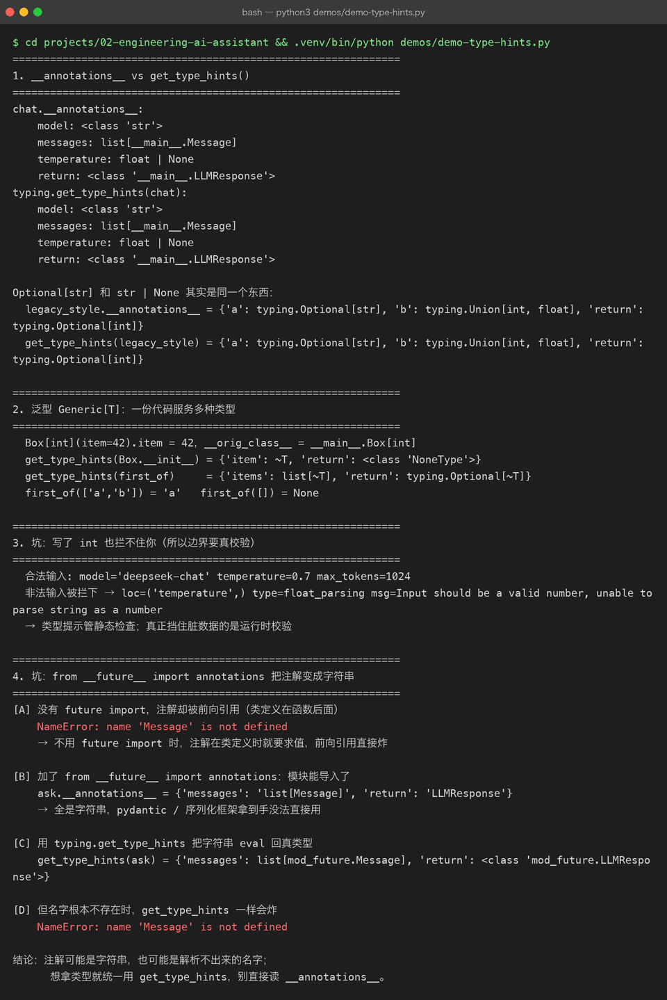
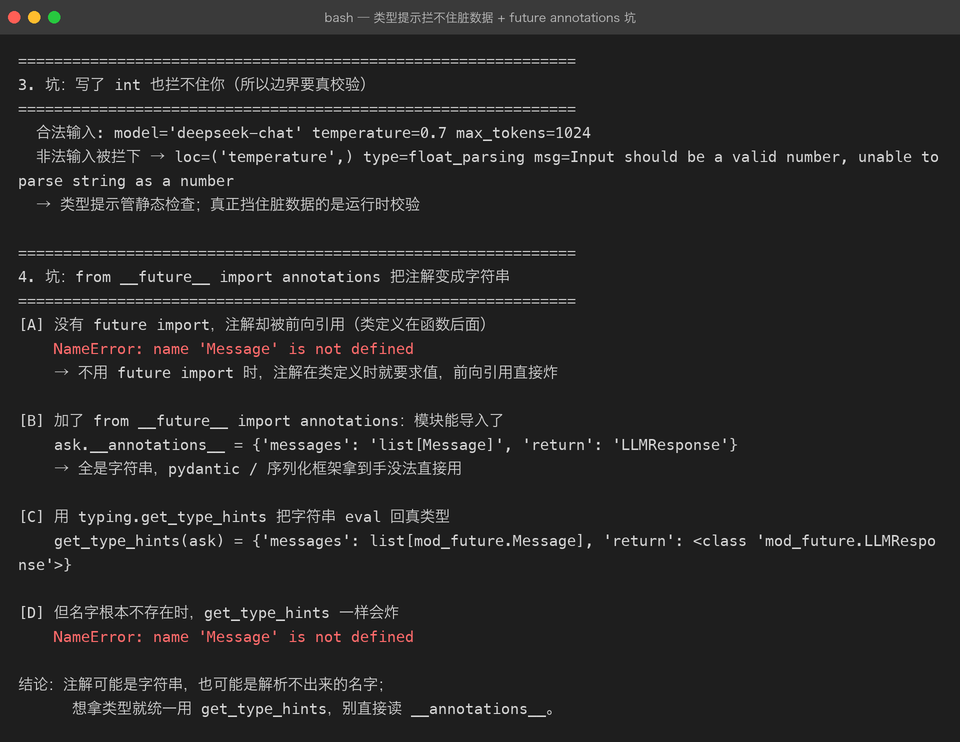

Project 02 — Chapter 03：Type Hints【类型提示】
本章 ↔
src/对照（校对时补：本章概念在真实代码里的落点） -src/assistant/settings.py: Settings— 每个字段都有类型注解，from_env()负责str → float/int转换 -src/assistant/client.py: BaseLLMClient— 抽象基类 + 完整签名类型；DeepSeekClient/FakeClient都实现它 -src/assistant/conversation.py— 历史统一为list[dict[str, str]]，与 OpenAI 的 messages 契约对齐 -src/assistant/api.py— FastAPI 用 PydanticBaseModel做运行时校验（类型提示只管静态，边界还得靠它）
1. 项目问题
上一章我们已经把 AI Assistant 的网络层升级成：
AI Application
↓
Assistant
↓
LLMClient
↓
AsyncClient
↓
LLM API现在代码虽然越来越工程化，但又出现了一个问题：
async def chat(messages):
...这里的：
messages到底是什么？
是：
list还是：
dict还是：
list[dict]甚至：
list[dict[str, str]]返回值呢？
return response.json()到底返回：
dict还是某种更复杂的嵌套结构？
当项目只有几百行代码时，问题可能不明显。
但 AI 项目继续发展：
RAG
↓
Agent
↓
Tool Calling
↓
MCP
↓
Database
↓
API数据对象会越来越多。
如果所有代码都是：
dict
list
str很快就会出现：
字段写错
↓
IDE 不知道
↓
运行到某个分支才发现
↓
定位困难所以本章解决：
如何让 Python 代码更明确、更容易被 IDE、类型检查工具和开发者理解。
2. Type Hint【类型提示】是什么
最简单的例子：
def add(a: int, b: int) -> int:
return a + b这里：
a: int表示：
我期望
a是整数。
b: int表示：
我期望
b是整数。
-> int表示：
我期望这个函数返回整数。
因此：
def add(a: int, b: int) -> int:可以理解为：
输入：
a → int
b → int
输出：
int3. 一个非常重要的误区
Type Hint 不是传统意义上的强制类型系统。
例如：
def add(a: int, b: int) -> int:
return a + b你仍然可能运行：
add("1", "2")Python 本身不一定因为这个类型提示就自动阻止你。
所以要记住：
Type Hint【类型提示】主要是给开发者、IDE 和静态类型检查工具提供类型信息。
而不是把 Python 自动变成 Java。
4. Java ↔ Python
你有 Java 背景，可以直接建立这个映射：
Java：
public int add(int a, int b) {
return a + b;
}Python：
def add(a: int, b: int) -> int:
return a + b两者都表达：
参数类型
+
返回类型但 Python 的类型提示更加偏向：
Development Aid【开发辅助】
以及：
Static Type Checking【静态类型检查】
而 Java 的类型系统直接参与语言本身的编译和类型约束。
5. 为什么 AI 项目尤其需要类型提示
因为 AI 应用的数据结构特别多。
例如一个消息：
message = {
"role": "user",
"content": "什么是 RAG？"
}看起来很简单。
但项目继续升级以后：
Message
Tool Call
Tool Result
Model Response
Embedding
Document
Chunk
Retriever Result
Agent State
MCP Request
MCP Response都会产生结构化数据。
如果所有代码都这样：
data["xxx"]["yyy"]很容易出现：
字段名写错
↓
结构理解错误
↓
运行时才发现类型提示可以让数据结构变得更加明确。
6. 第一个升级：给函数加类型
之前：
async def chat(messages):
...现在：
async def chat(messages: list[dict[str, str]]) -> dict:
...至少表达了：
messages
↓
List【列表】
↓
里面是 Dict【字典】
↓
字典的 Key 是 String
↓
Value 也是 String也就是：
list[dict[str, str]]7. 读取这个类型
例如：
messages: list[dict[str, str]]可以拆成：
list
↓
多个 dict
↓
dict 的 key 是 str
↓
dict 的 value 是 str所以：
messages = [
{
"role": "user",
"content": "你好"
}
]符合：
list[dict[str, str]]8. 但是这个设计仍然有问题
想象一下：
messages: list[dict[str, str]]这个定义并没有说明：
key 必须有哪些？实际上我们希望：
role
content而不是：
{
"hello": "world"
}也就是说：
dict[str, str]只是说“这是一个字符串到字符串的字典”，并没有真正描述业务对象。
所以我们需要更进一步。
9. TypedDict【类型化字典】
Python 提供：
from typing import TypedDict例如：
class Message(TypedDict):
role: str
content: str这样：
message: Message = {
"role": "user",
"content": "你好",
}就比：
dict[str, str]更加明确。
因为现在我们表达的是：
Message
├── role: str
└── content: str10. AI 项目里的 Message
于是可以写：
from typing import TypedDict
class Message(TypedDict):
role: str
content: str然后：
async def chat(
messages: list[Message],
) -> dict:
...此时函数含义变得清楚：
chat()
输入：
List[Message]
输出：
Dict这已经比：
async def chat(messages):明确很多。
11. 为什么这对 Agent 特别重要
以后进入：
Function Calling
Agent
MCP一个请求可能变成：
Message
├── role
├── content
└── tool_calls如果没有类型提示：
message["tool_calls"][0]["function"]["arguments"]这种代码会越来越难维护。
类型系统可以帮助你把数据结构显式表达出来。
这也是为什么：
Python Engineering 是后面 Agent 工程化的重要基础。
12. List / Dict / Optional
常见写法：
names: list[str]表示：
List【列表】
└── String【字符串】例如：
names: list[str] = [
"Java",
"Python",
"AI",
]字典：
scores: dict[str, float]表示：
Dictionary【字典】
├── key: str
└── value: float可选值：
from typing import Optional
name: Optional[str]表示：
name
可能是：
str
或者
None现代 Python 也经常写：
name: str | None含义一样：
str
OR
None13. 默认值和 Optional
例如：
def find_user(user_id: str) -> str | None:
...表示：
找到用户
→ str
没找到
→ None这比：
def find_user(user_id):清晰得多。
调用者可以提前知道：
这个函数不是一定有结果。
14. 类型提示不只是参数
还可以写变量：
model_name: str = "qwen"
temperature: float = 0.7
max_tokens: int = 1024
enabled: bool = True因此配置对象会更清楚：
model_name → str
temperature → float
max_tokens → int
enabled → bool15. Type Alias【类型别名】
有时候一个复杂类型会反复出现：
list[dict[str, str]]如果项目几十处都出现，会很难看。
可以定义：
MessageList = list[dict[str, str]]以后：
def chat(messages: MessageList):
...但对于业务对象，更推荐把结构本身表达清楚，而不是大量堆类型别名。
例如：
class Message(TypedDict):
role: str
content: str
MessageList = list[Message]这样更有语义。
16. Protocol【协议】
现在开始接触一个对大型 Python 项目很重要的概念。
假设：
OpenAI Client
DashScope Client
Anthropic Client
Local Model Client都提供：
chat()我们希望上层代码不依赖具体供应商。
可以使用：
from typing import Protocol
class LLMClient(Protocol):
async def chat(
self,
messages: list[Message],
) -> dict:
...含义：
只要一个对象具备符合这个接口的方法，就可以被当成
LLMClient使用。
17. 为什么 Protocol 对 AI 工程很重要
以后你可能拥有：
OpenAI
↓
OpenAIClient
DashScope
↓
DashScopeClient
Local Ollama
↓
OllamaClient但是：
Assistant不应该关心具体是哪一个。
于是：
Assistant
↓
LLMClient Protocol
↓
┌───────────────┐
│ │
OpenAI DashScope
│ │
Local Model ...联系描述：
Assistant 只依赖“能够完成聊天调用的接口能力”，而不是具体供应商。不同 Client 只要满足相同的协议，就可以被替换。这为以后实现 Model Provider【模型供应商】抽象打基础。
18. Java 对比 Protocol
Java 中你可以类比：
interface LLMClient {
Response chat(List<Message> messages);
}然后：
class OpenAIClient implements LLMClient {}
class DashScopeClient implements LLMClient {}Python 的：
Protocol在设计意图上与这种接口抽象有相似之处。
但 Python Protocol 属于：
Structural Typing【结构化类型】
核心思想是：
不要求显式声明“我实现了这个接口”，只要结构符合要求，就可以被使用。
19. Type Checker【类型检查器】
类型提示真正强大，需要配合工具。
常见工具：
Mypy【Python 静态类型检查器】
Pyright【Python 类型检查器】它们可以检查：
def add(a: int, b: int) -> int:
return a + b
result = add("1", "2")然后发现：
str
↓
不符合
↓
int这样错误可以在运行程序之前被发现。
20. IDE 为什么突然变聪明
你在 IDE 中写：
message.如果类型明确：
MessageIDE 就知道这个对象有哪些字段。
而如果只是：
dictIDE 能知道的信息就少很多。
因此：
Type Hint
↓
Type Information
↓
IDE Support
↓
Static Checking
↓
Earlier Error Detection这就是类型提示在工程中的实际价值。
21. 把 Project 02 的代码升级
当前：
class LLMClient:
async def chat(self, messages):
...升级：
from typing import TypedDict
class Message(TypedDict):
role: str
content: str
class LLMResponse(TypedDict):
content: str
class LLMClient:
async def chat(
self,
messages: list[Message],
) -> LLMResponse:
...注意：
真实供应商 API 返回结构通常比这个复杂。
这里重点是：
演示如何给业务边界增加明确的类型。
不要把示例类型假装成所有 LLM Provider【模型供应商】都完全一致的真实 API Schema【模式】。
22. 更进一步：不要什么都返回 dict
如果：
response = {
"content": "...",
"model": "...",
"usage": {...},
}继续使用：
dict项目越来越大后，还是会出现：
response["content"]
response["model"]
response["usage"]于是下一章：
Dataclass【数据类】
就开始有意义了。
因此本章不是要把所有类型问题解决掉。
而是完成：
动态数据
↓
类型信息
↓
明确的数据边界
↓
为 Dataclass 做准备

23. 本章知识地图
Type Hint【类型提示】
│
├── 基础类型
│ ├── str
│ ├── int
│ ├── float
│ └── bool
│
├── 容器类型
│ ├── list
│ ├── dict
│ └── tuple
│
├── Optional / Union
│
├── TypedDict
│
├── Type Alias
│
├── Protocol
│
└── Type Checker
├── Mypy
└── Pyright联系描述：
基础类型解决“单个值是什么”；容器类型解决“数据集合是什么”；TypedDict 进一步描述字典的业务字段；Protocol 用于抽象不同实现之间共同的能力边界；类型检查器再利用这些类型信息，在运行前帮助发现错误。最终形成的是一套从数据到接口再到工具检查的类型体系。
24. 项目架构变化
Project 02 到现在：
main.py
↓
assistant.py
↓
LLMClient
↓
AsyncClient现在开始有明确的数据边界：
main.py
↓
Assistant
↓
Message
↓
LLMClient Protocol
↓
Concrete LLM Client
↓
AsyncClient
↓
HTTP更加完整地看：
┌───────────────┐
│ Application │
└───────┬───────┘
↓
┌───────────────┐
│ Typed Models │
└───────┬───────┘
↓
┌───────────────┐
│ LLM Interface │
└───────┬───────┘
↓
┌───────────────┐
│ HTTP Client │
└───────────────┘25. 实战任务
Task 1：Message 类型化
创建：
class Message(TypedDict):
role: str
content: str然后把：
messages全部改成：
list[Message]Task 2：配置类型化
给：
model_name
temperature
max_tokens
base_url添加类型提示。
Task 3：LLMClient 类型化
至少明确：
async def chat(
messages: list[Message],
) -> ...的参数类型和返回类型。
Task 4：增加 Protocol
定义：
class LLMClientProtocol(Protocol):
...尝试让 Assistant 不依赖具体 Provider。
Task 5：类型检查
使用 Mypy 或 Pyright 对项目进行一次类型检查。
目标不是：
让整个仓库一次性 0 error。
而是：
理解类型检查器发现的问题是什么，以及为什么出现。
26. 实战挑战
故意制造错误：
messages: list[Message] = [
{
"role": "user",
"content": 123,
}
]观察类型检查器。
然后故意：
messages.append({
"name": "test",
})观察它能否发现：
字段不符合 Message这个实验比单纯看概念更重要。
27. 主动回忆
不要看上面的内容，先回答：
Q1
Type Hint 到底解决什么问题？
Q2
为什么 Type Hint 不等于 Java 的强类型约束？
Q3
list[dict[str, str]] 表达了什么？
Q4
为什么 TypedDict 比 dict[str, str] 更适合描述 AI Message？
Q5
Optional[str] 和 str | None 是什么关系？
Q6
Protocol 解决什么问题？
Q7
Python 的 Protocol 和 Java interface 有什么相似点和区别？
Q8
为什么 AI 项目越大，越需要 Type Checker？
Q9
Mypy / Pyright 的作用是什么？
Q10
为什么类型提示能够改善 IDE 的开发体验？
28. 面试标准话术
问：Python 为什么需要 Type Hint？
Python 本身是动态类型语言，但随着项目规模扩大，函数参数、返回值和业务对象越来越复杂。Type Hint 可以显式描述数据类型，为开发者、IDE 和静态类型检查工具提供类型信息，从而提高代码可读性、自动补全能力和错误发现能力。对于 AI 项目来说，Message、Tool Call、Agent State 等结构越来越复杂，因此类型提示对工程可维护性尤其重要。
问：TypedDict 是什么？
TypedDict用来描述字典的预期结构和字段类型。它仍然是字典，但类型检查工具可以根据定义检查字段是否正确，因此比单纯的dict[str, str]能表达更明确的业务数据结构。
问：Protocol 是什么？
Protocol用于定义一种结构化接口。只要对象具有符合协议要求的方法和属性，就可以被视为满足这个协议，而不要求显式继承它。它适合做依赖抽象，例如让 Assistant 依赖统一的 LLM Client 接口，从而方便替换不同模型供应商。
29. 常见坑
坑 1：认为写了类型提示就不会出错
错误。
age: int = "hello"类型提示本身并不会自动阻止所有错误。
需要：
Type Hint
+
Type Checker才能发挥静态检查价值。
坑 2：为了类型而类型
不要把每一行代码都写成复杂泛型。
目标是：
提高理解和维护能力。
而不是制造类型噪音。
坑 3：所有东西都写 dict
例如：
response: dict这几乎没有提供什么有效信息。
能描述具体结构时，应尽可能明确。
坑 4：把第三方 API 的真实 Schema 想当然地固定下来
不同模型供应商的请求和响应结构可能不同。
应该区分：
Provider API Schema和：
Internal Application Model【内部应用模型】后续工程化时，可以通过适配器把供应商格式转换成自己的内部结构。
30. 一个非常重要的工程思想
本章真正要建立的不是：
“Python 有类型提示。”
而是：
建立清晰的数据边界。
例如：
External API Response
↓
Adapter
↓
Internal Model
↓
Application这样外部世界怎么变化：
OpenAI
DashScope
Anthropic
Local Model内部业务层仍然可以保持稳定。
这会直接连接到后面的：
Dataclass
Configuration
Dependency Injection【依赖注入】
Adapter Pattern【适配器模式】
FastAPI31. Project 02 当前进度
Project 02 — Engineering AI Assistant
Chapter 01
Async / Await
✅
Chapter 02
Async HTTP Client
✅
Chapter 03
Type Hints
✅
Chapter 04
Dataclass
⬜
Chapter 05
Config / Environment
⬜
Chapter 06
Logging
⬜
Chapter 07
Testing / Debugging
⬜
Chapter 08
Packaging
⬜
Chapter 09
FastAPI
⬜当前能力已经从：
Python Script逐步升级为：
Async Application
↓
Reusable HTTP Client
↓
Typed Application Boundary32. 本章完成标准
[ ] 理解 Type Hint【类型提示】
[ ] 理解动态类型 vs 类型提示
[ ] 会给函数参数增加类型
[ ] 会给返回值增加类型
[ ] 会使用 list / dict 类型
[ ] 理解 Optional
[ ] 理解 TypedDict
[ ] 理解 Protocol
[ ] 了解 Mypy / Pyright
[ ] 给 Project 02 的 Message 类型化
[ ] 给 LLM Client 类型化
[ ] 完成一次类型检查实验
[ ] 理解“内部模型”和“外部 API Schema”的区别33. 联系 Project 02 的下一步
现在的数据链路：
User Input
↓
Message
↓
Typed Message
↓
Assistant
↓
LLM Client
↓
Async HTTP
↓
LLM API下一章：
Chapter 04 — Dataclass【数据类】
我们会继续解决一个问题：
TypedDict
↓
还是字典
↓
配置越来越复杂
↓
数据对象越来越多
↓
怎么办？下一步会把 Project 02 中的配置、请求对象、响应对象逐步从“裸字典”升级成更加明确的 Python 数据对象。